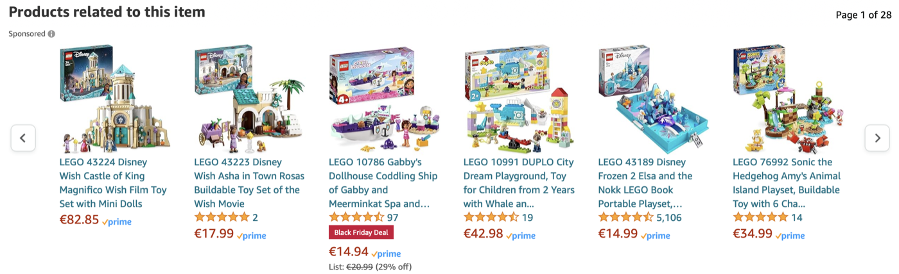
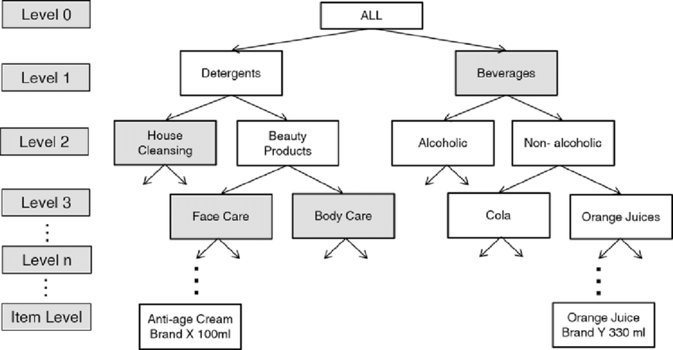
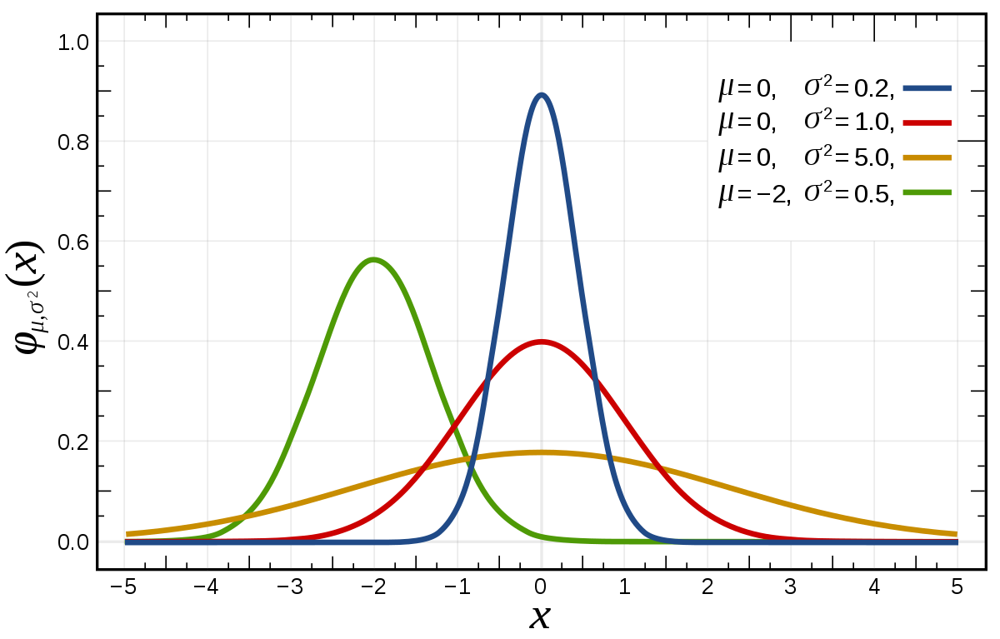
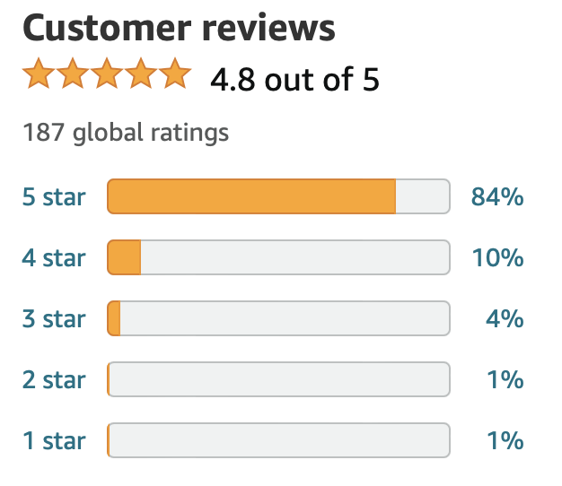
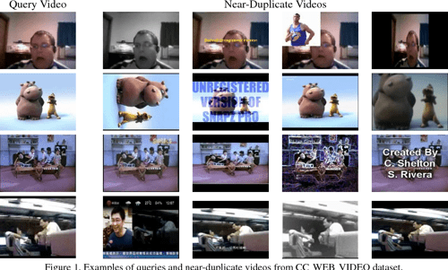

Choosing a distance is choosing which patterns an algorithm can see — worked through two case studies.
A. Anand · study deck
Part I
Why distance underlies data mining
Before any formula: what does a distance actually let us do?
The one argument of this lecture
Mining is deciding what belongs together
Central idea
Data mining discovers patterns by deciding which objects belong together.
Representation and distance are what make that decision precise.
So the interesting question isn’t “what’s the formula” — it’s which differences we choose to let matter.
Provocation to hold onto: can we change the discovered patterns without changing the data?
Distance is a shared building block
One dataset — four questions
Mining task
The question, expressed through distance
Classification
Which labelled examples are closest to this new object?
Clustering
Which objects are close enough to form groups?
Anomaly detection
Which objects are far from the usual observations?
Similarity search
Which existing objects are closest to this query?
Don’t overclaim
Distance is a common language — not a law
Honest qualification
Many methods use distance explicitly. Others use
related notions — similarity, reconstruction error, divergence. Distance gives a shared
vocabulary, but not every method requires a metric.
We’ll still see that changing the distance changes the neighbours, the groups, and what counts as far.
Part II
Task → representation → distance
The choice of distance is the model — so make the choice deliberately.
“Similar” is ambiguous on purpose
Close in what sense?
Two shoes can be close in price but different in purpose.
Two products can have similar descriptions but very different prices.
Two visually similar products may be substitutes; two bought-together products may be complements.
Consequence
Different features give different neighbours. Picking the feature and the distance is picking the model —
this is the most important idea in the lecture, so we put it first.
Four decisions, in order
Task → representation → distance → decision
Choice
What it determines
Task
What “similar” should mean
Representation
What information is available for comparison
Distance
Which differences matter, and how much
Decision rule
What we do with the resulting distances (e.g. top-k)
And you don’t always need a vector first — trees, strings and sets have distances directly.
Part III
Metrics as useful guarantees
What properties make a distance predictable — and fast?
Each axiom buys you something
The axioms, with their payoff
Property
What it guarantees
Non-negativity d(x,y) ≥ 0
Difference has a meaningful zero baseline
Identity of indiscernibles d(x,y)=0 ⇔ x=y
Distinct objects stay distinguishable
Symmetry d(x,y)=d(y,x)
Comparing A to B equals B to A
Triangle inequality d(x,z) ≤ d(x,y)+d(y,z)
Known distances constrain unknown ones
Why the triangle inequality earns its keep
Metric structure lets us skip work
Pruning with the triangle inequality
A query q is distance 10 from a reference r. A candidate c is distance
2 from r. Then c must be at least
10 − 2 = 8 from q.
So
If we only want neighbours within distance 3, we can discard c without ever computing d(q,c).
That is the computational reason metric structure matters — it powers indexes that avoid the full n² comparisons.
Keep these separate
Valid metric ≠ useful distance
Ask both, independently
1 · Is it a mathematically valid metric?2 · Does it capture the similarity our task needs?
Neither answer settles the other. A valid metric can be useless for a task; a genuinely useful
dissimilarity need not satisfy every axiom. We’ll see both in the case studies.
Part IV · Case study 1
Products: which differences matter
Designing a similarity, as a sequence of decisions.
“I want to suggest similar items”
First decide what relevance means

What makes a product a useful recommendation for another — shared category? co-purchase?
“related items” / clicks vs. purchases define the target before any distance is chosen.
What information is available
Four representations of a product
Category
Where it sits in the catalogue tree
Text
Title & description terms
Price
A single numeric feature
Reviews
Ratings & their distribution
Each representation needs its own distance — and each will disagree about who the neighbours are.
Category → a tree
Taxonomy distance = shortest path

Distance = path length up to a common ancestor and back down. A metric on category nodes.
But distinct products in the same category have distance 0 — the representation, not the metric, is the limit.
Text → direction of a term vector
Cosine: similar wording, any length
cos(θ) = (a · b) / (‖a‖ ‖b‖) dcos= 1 − cos(θ)
Read it carefully
Only the direction of the term vectors matters, never their length — great for descriptions of different sizes.
Mind two traps: distance 0 means same direction, not identical (proportional vectors collapse to 0);
and 1 − cos θ is not a true metric — it can violate the triangle inequality. Useful, but not a metric.
Price → Euclidean, but beware units
Standardize — then don’t over-trust it

Raw price dominates small-scale features, so standardize: z = (x − μ)/σ.
But equal scale ≠ equal relevance, and it does not remove outlier sensitivity — scaling is not a priority decision.
Reviews → sparse & cold-start
What about products with no history?

Most products have few reviews; brand-new ones have none (cold start).
The distance must degrade gracefully when a representation is missing or thin.
Question
Your query is a running shoe. Ranked by price, the single closest product is a formal dress shoe. Is that a good recommendation — and what decides the answer?
Price crowns a dress shoe; text pulls in socks; only the right representation ranks the other
running shoe first. The distance is the model.
From objective to algorithm
Combine distances — weights are priorities
d(x,y) = wc·dcategory + wt·dtext + wp·dprice
Two warnings that ride together
The terms must be on comparable scales before you add them — exactly the standardization point again.
The weights w encode priorities; they are the model’s hyperparameters. Standardization does not choose them for you —
you decide what should matter. Then rank the top-k neighbours and evaluate against real clicks/purchases.
Part V · Case study 2
Videos: which differences to ignore
Invariance, thresholds, and a system that scales.
YouTube: near-duplicates of an upload
Equivalent for our task, different in the bytes

What should be ignored: re-encoding, modest colour changes, logos/overlays, small crops.
The job is the opposite of case 1 — choosing differences to discard.
Byte equality is the wrong tool
Exact ≠ near
The failure
Byte equality and cryptographic hashes (MD5, SHA) are designed so one changed pixel flips the whole digest.
They detect identical files, never perceptually similar ones.
We need a representation where small perceptual changes → small distance.
Construct the right representation
Perceptual hashing (pHash)
The general idea
Reduce each frame to a short fingerprint that survives re-encoding and minor edits — typically from
low-frequency structure, so cosmetic changes don’t move it.
Keep the idea separate from any one scheme. Code length, keyed behaviour and non-invertibility are
properties of particular hashes, not defining features of perceptual hashing in general.
Compare → Hamming distance
Count the differing bits
a = 10110010 b = 10111010 → dHamming = 1
Back to Part III
Hamming distance is a proper metric on fingerprints — all four axioms hold.
Yet distinct videos can share a fingerprint. A metric in the representation space does not guarantee the
originals are distinguishable — the same lesson as taxonomy-distance on products.
Make a decision, accept errors
Pick a threshold — trade off the two mistakes
Decision rule call it a near-duplicate when Hamming distance ≤ τ.
Threshold too tight → miss real duplicates (false negatives).
Threshold too loose → flag unrelated videos (false positives).
τ is chosen from data — exactly the kind of knob the task, not the metric, decides.
Generate a small candidate set cheaply (fingerprint buckets / LSH), then verify the few survivors with the
expensive comparison. Never materialise all n² distances.
The same shape powers web search, retrieval and question answering — a recurring pattern this year.
Synthesis
Change the distance, change the patterns
Why this one choice ripples through every task.
Back to the four tasks
Changing the distance changes the answer
Nearest neighbours change → classifications and recommendations change.
Neighbourhoods change → clusters and density estimates change.
What counts as “far” changes → detected anomalies change.
Case
Main lesson
Products
Choosing which differences matter
Videos
Choosing which differences to ignore
Take away · and a transfer exercise
Choosing a distance is choosing what you can see
The message
Task → representation → distance → decision. Metrics buy predictability and speed; but a valid metric and a
task-useful distance are two separate questions.
Choosing a distance is choosing which patterns an algorithm can see.
Transfer: for detecting duplicate news articles — what representation would you choose,
which changes should be ignored, and how would you evaluate the result?